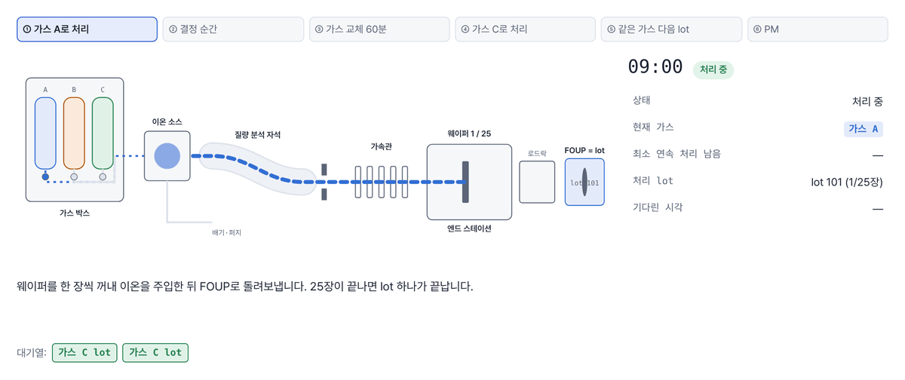

개요

이온 주입 장비의 가스 교체 시점 결정 문제
반도체 이온 주입 장비는 한 작업에 한 종류의 가스만 쓰고, 가스를 교체하는 데 60~80분이 걸립니다. 다음 작업의 가스가 다를 때 바로 바꿀지, 같은 가스 작업을 기다릴지를 강화학습으로 정하는 팀 프로젝트입니다.
역할
직접 구현일부 참여팀원 담당·기존 도구
- 장비군 시뮬레이터 구축공장 기록을 재생해 이온 주입 장비군만 단독으로 빠르게 돌리는 시뮬레이터를 구축하고, 공장과 같은 결과를 내는지 검증했습니다.
- 실험 설계비교 기준이 될 운영 규칙(cov)을 정하고, 학습·검증·시험·공장 검증에 쓰는 시드를 서로 나눴습니다. 검증 점수 차이가 미리 정한 기준을 넘을 때만 설정을 바꾸도록 했습니다.
- 결정 간격 실험장비가 기다리기를 고른 뒤 몇 분 후에 가스 교체 여부를 다시 판단할지 비교한 팀 실험에서, 후보 6개 중 40·80분 조건을 맡아 DQN·PPO 각각 5개 시드로 학습했습니다(20회). 세 명의 결과를 합쳐 40분을 공통값으로 정했습니다.
- 공장 시뮬레이션 검증작은 환경에서 고른 정책을 공장 전체 시뮬레이터에 다시 넣어 확인하는 검증을 24회 수행했습니다.
- PPO 학습·판정PPO 담당 두 명 중 한 명으로 학습률·할인율(γ) 비교와 최종 시험 학습을 나눠 맡고, 할인율 비교 판정을 했습니다. DQN 학습은 팀원이 담당했습니다.
문제
가스 교체 여부를 결정하는 정책을 공장 전체 시뮬레이터에서 직접 학습하기는 어렵습니다.
이온 주입 장비는 한 번에 한 종류의 가스만 사용하며, 가스를 교체하는 60~80분 동안 웨이퍼를 처리하지 못합니다. 현재 가스의 작업이 없을 때 즉시 교체하면 곧 도착할 같은 가스 작업 때문에 다시 교체할 수 있고, 교체를 미루면 다른 가스 작업의 지연이 누적됩니다.
60~80분 동안 처리 불가. 교체 뒤 최소 7 lot은 같은 가스로 처리
같은 가스 작업이 곧 오면 교체를 아낌. 오지 않으면 다른 가스 작업의 대기가 누적
선행 연구와 학습 환경의 제약
평가 대상의 모호성
선행 프로젝트(공장 풀가동, AMR 배차·충전)에서는 반송 시간이 줄어도 공장 전체 생산성이 개선되었는지 판단하기 어려웠습니다. 이에 의사결정 범위를 가스 교체 하나로 좁혔습니다.
학습 비용
공장 전체 시뮬레이터는 2년 실행 1회에 약 1.5시간이 걸립니다. 수십만 번의 결정을 반복해야 하는 강화학습을 이 환경에서 직접 수행하기 어렵습니다.
보상 신호의 희석
공장 사이클타임의 시드 간 편차(약 0.76일)가 단순 규칙 개선의 기대 이득(약 0.38일)보다 컸습니다. 공장 전체 지표를 보상으로 쓰면 개별 결정의 효과가 잡음에 묻힙니다.
해결: 이온 주입 장비군 단독 시뮬레이터 구축
학습 비용과 보상 희석 문제를 해결하기 위해, 공장 기록(도착·고장·PM)을 재생해 이온 주입 장비군만 단독으로 돌리는 시뮬레이터를 구축했습니다. 240일 실행이 장비군당 1~2초로 줄어 강화학습을 충분히 반복할 수 있게 되었고, 보상은 공장 전체 지표 대신 장비 앞 대기 시간과 교체 시간의 합으로 정의해 개별 결정의 효과가 드러나도록 했습니다.
단독 시뮬레이터가 공장을 충실히 재현하는지는 규칙을 바꿨을 때의 대기 변화(9개 조합 순위 일치, 차이 2%p 이하)와 결정 시점 상태 분포(KS 0.08 이하)로 확인했습니다. 학습과 정책 선택은 시뮬레이터에서 수행하고, 선택한 정책은 학습에 쓰지 않은 공장 시드에서 다시 평가했습니다.
구현 과정
장비군 단독 시뮬레이터 구축
공장 시뮬레이터를 한 번 실행해 이온 주입 장비군 앞의 웨이퍼 도착, 장비 고장·PM 기록을 남기고, 이 기록을 그대로 재생하는 장비군 단독 시뮬레이터를 구축했습니다. 도착이 몰렸다 끊기는 양상(분산/평균 1.6~3.5)을 보존하기 위해 확률 분포 대신 실제 기록을 사용했습니다. 정책은 결정 시점마다 현재 가스 유지(대기)와 가스 교체 중 하나를 고르며, 보상은 장비 앞 대기 시간과 교체 시간의 합으로 정의했습니다.
정책은 장비가 비었고 현재 가스의 작업은 없지만 다른 가스의 작업이 있을 때만 호출됩니다. 상태는 대기열·장비·PM·도착·앞 공정을 담은 29개 변수이고, 행동은 기다리기와 다른 가스 두 종류로의 교체 중 하나입니다.
- 장비가 비어 있음
- 현재 가스의 작업이 없음
- 다른 가스의 작업이 있음
- 장비군 크기 · 교체 시간
- 대기열 · PM까지 남은 양
- 다른 장비의 가스 · 잠금
- 가스별 대기 · 도착 · 앞 공정
- 기다리기 (40분)
- 다른 가스 1로 교체
- 다른 가스 2로 교체
- 대기 작업 수 × 경과 시간
- + 교체 시간
- 장비 수로 나눈 음의 값
긴급 작업이나 정비 후 가스가 풀린 상태는 기준 규칙(cov)이 처리합니다. 대기 작업이 없는 가스로의 교체는 막습니다.
기본 규칙 재현
기본 규칙의 대기·교체 시간이 같은 시드의 공장 실행과 ±15% 안에 들었습니다.
규칙 간 순위 보존
규칙 9개 조합의 대기 순위가 공장과 같고, 차이가 2%p 이하임을 확인했습니다.
상태 분포 일치
결정 시점의 상태 변수 분포가 공장과 KS 거리 0.08 이하로 일치했습니다.
실험 설계
비교 기준을 가스별 대기량을 담당 장비 수로 나눈 압력 규칙(cov)으로 정하고, 기록 시드를 용도별로 분리했습니다. 기록 시드 1은 cov 조정과 학습, 시드 7은 학습 중 저장 시점·설정 선택, 시드 2·3(고장 시드 1~5와 조합)은 장비군 시뮬레이터 시험, 공장 시드 4~6은 최종 검증에만 사용했습니다. 같은 시드는 같은 도착 흐름을 만들기 때문에 시드마다 용도를 하나로 제한했습니다. 설정은 검증 점수 차이가 미리 정한 기준을 넘을 때만 변경해, 시험 결과가 설정 선택에 다시 쓰이지 않도록 했습니다.
실험과 하이퍼파라미터 비교
실험 설계
설정은 한 번에 하나씩 바꾸고, 기록 시드 7의 검증 점수 차이가 시드 간 잡음으로 정한 기준을 넘을 때만 변경했습니다. 학습률이 바뀌면 적절한 할인율도 달라질 수 있으므로 아래 순서로 진행했습니다.
1. 결정 간격
기다리기를 고른 장비가 가스 교체 여부를 다시 판단하기까지의 간격을 여섯 조건으로 비교했습니다. 간격이 길수록 검증 성능이 대체로 좋아졌고, DQN과 PPO의 동점 범위가 겹치는 조건 가운데 평균이 가장 낮은 40분을 공통 설정으로 정했습니다(그림 1).
2. 학습률·할인율·민감도
학습률은 DQN의 고정·감소 방식과 PPO의 감소 방식 세 가지를 비교했으나, 검증 점수 차이가 기준보다 작아 기존 설정을 유지했습니다. 할인율은 시간당 0.8로 낮추면 수십 분 뒤에 나타나는 교체의 이득을 학습하지 못해 두 알고리즘 모두 크게 나빠졌고(DQN 검증 비용 비율 0.801 → 0.896), 0.95는 0.9와 구분되지 않아 0.9를 유지했습니다.
민감도 분석에서는 교체 탐색률이 가장 큰 영향을 보였습니다. 탐색률을 시간당 0.6에서 0.3으로 낮추면 기준 규칙 대비 대기 감소 폭이 14.2%에서 9.0%로 줄어, 교체 경험의 양이 학습 성능을 좌우했습니다. 다단계 목표 길이에는 둔감했고, 앞 공정 정보·다단계 목표·탐색 기준점은 제거할 때마다 1~3%p 나빠지는 방향을 보였습니다.
3. 최종 설정
위 결과로 정한 설정은 표 1과 같으며, 설정 선택에 쓰지 않은 학습 시드 10개로 최종 시험을 진행했습니다.
| DQN | PPO | |
|---|---|---|
| 네트워크 | 29 → 64 → 64 → 3 | Actor·Critic 각 29 → 64 → 64 |
| 학습률 | 1e-4 고정 | 3e-4, 600회에 걸쳐 감소 · 하한 10% |
| 학습량 | 120만 환경 step | 최대 1,000회, 600회 이후 조기 종료 |
| 탐색 | ε 1 → 0.05, 교체 탐색률 0.6/시간 | 초기 교체율 0.3/시간, 엔트로피 0.003 → 0 |
| 장기 보상 | 시간 기준 다단계 목표 0.5시간 | 시간 기준 GAE λ 0.95/시간 |
| 공통 | 결정 간격 40분, γ 0.9/시간 | |
공장 시뮬레이션 검증
장비군 시뮬레이터 시험에서 세 장비군 모두 기준 규칙보다 나은 정책만 공장 전체 시뮬레이터에 넣었습니다. 학습에 쓰지 않은 시드 4~6에서 730일을 실행하고 2년째 구간을 평가했으며, 이온 주입 대기와 공장 사이클타임·처리량을 구분해 기록했습니다(24회).
| 공장 시드 4 | 공장 시드 5 | 공장 시드 6 | |
|---|---|---|---|
| Implant 128하나만 적용 | −16.7% | −23.2% | −13.3% |
| Implant 132하나만 적용 | −1.5% | −20.3% | −8.5% |
| Implant 91하나만 적용 | −10.8% | −17.0% | +11.5% |
| 세 장비군 동시이온 주입 전체 | −13.1% | −16.3% | −10.3% |
PPO 학습률·할인율 비교와 최종 시험 학습을 나눠 맡았습니다. DQN 학습은 팀원이 담당했습니다.
트러블슈팅
장비군 시뮬레이터와 공장 간 대기 시간 차이
기본 규칙에서도 Implant 132의 대기가 공장보다 13~26% 길게 재현
132는 lot의 58%가 24시간 안에 다시 돌아오는데, 도착을 고정해 빨리 처리하면 빨리 돌아오는 되먹임이 빠짐
왕복 12시간 이하 재방문은 이번 처리 시각에 맞춰 도착하도록 연결
세 장비군 모두 공장 대비 ±15% 이내, 규칙 9개 조합 순위 일치
불규칙한 결정 간격에서의 탐색·학습 목표 설계
탐색 중 가스 교체가 과도하게 발생하거나, DQN이 기다리기만 선택하도록 수렴
결정의 99%가 기다리기인데 탐색과 학습 목표가 결정 횟수 기준이라, 몇 분 간격의 결정과 몇 시간 간격의 결정을 같게 취급
교체 탐색 확률, 할인, 다단계 목표를 모두 결정 횟수가 아닌 경과 시간 기준으로 재설계
기준 규칙 대비 DQN −13.0%
결과
장비군 시뮬레이터 시험
설정 선택에 쓰지 않은 시드에서 기준 규칙 대비 대기 지표가 DQN 13.0%, PPO 5.7% 감소했습니다. 가스 그룹과 시드에 따라 개선 폭이 달랐고, 일부 조건에서는 악화됐습니다.
공장 검증
세 장비군에 함께 적용했을 때 공장 전체의 이온 주입 대기가 시드별로 13.1%, 16.3%, 10.3% 감소했습니다.